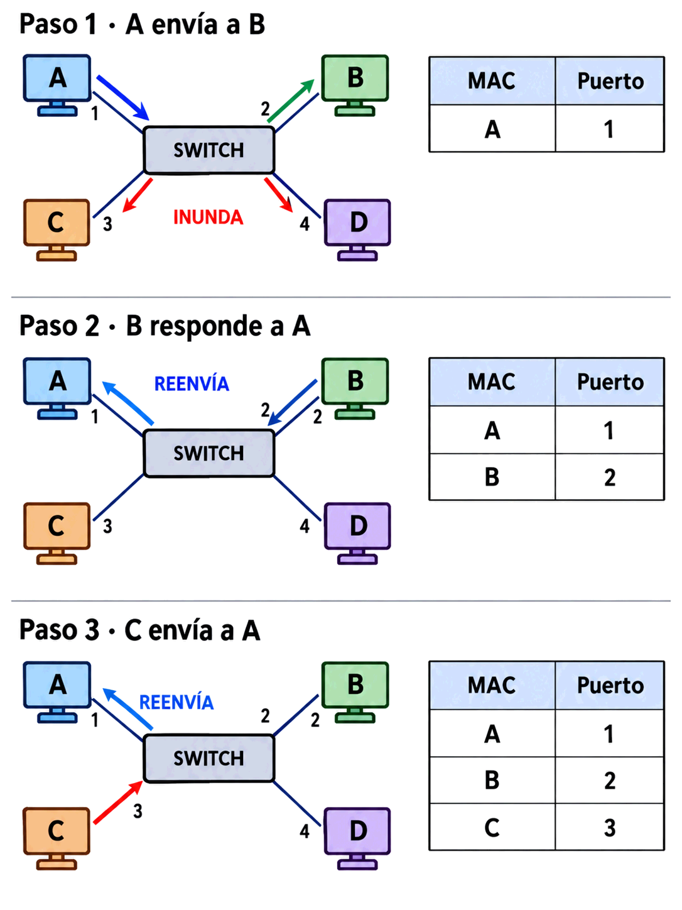

Hoy verás cómo lo consigue. Y es más ingenioso —y más sencillo— de lo que parece.
Esa medición dejaba una pregunta abierta: ¿cómo sabe el switch por dónde sacar cada trama?
Contenido del día
1. El switch recién encendido
Enchufas un switch nuevo, conectas ocho equipos y funciona. Nadie le ha dicho quién está dónde.
Y sin embargo no necesita que nadie se lo diga: lo va a averiguar él solo, a partir del propio tráfico que atraviesa sus puertos. A eso se le llama que el switch es un dispositivo de aprendizaje automático, en el sentido literal y nada moderno de la expresión.
2. Aprender: la dirección de origen
Aquí está el truco, y cabe en una frase:
AA:AA:AA:AA:AA:AA, el switch deduce
algo que es evidente en cuanto se dice en voz alta:
«Si esta trama ha entrado por el puerto 3, entonces quien la ha enviado está en el puerto 3.»
Y lo apunta. Así de simple. No hace falta preguntar nada ni configurar nada: cada trama que pasa trae, gratis, la información de dónde está su emisor.
Porque en una red todo el mundo habla. Un equipo que está encendido envía tráfico constantemente: peticiones, respuestas, anuncios, comprobaciones. En cuanto emite una sola trama, el switch ya sabe dónde está.
Y si un equipo nunca hablara, daría igual que el switch no lo conociera: tampoco habría nadie intentando responderle.
Fíjate en la asimetría, que es lo elegante del mecanismo: el switch aprende de las tramas que pasan hacia otro sitio. No necesita que le hablen a él.
3. La tabla MAC
Lo que el switch apunta se guarda en una tabla que tiene varios nombres: tabla MAC, tabla CAM o tabla de reenvío. Las tres significan lo mismo.
| Dirección MAC | Puerto | Antigüedad |
|---|---|---|
50:eb:f6:26:b4:2f | 1 | 12 s |
e4:ab:89:b8:6f:38 | 4 | 3 s |
c0:c9:e3:e4:e8:97 | 7 | 145 s |
Al revés no: una misma MAC no puede estar en dos puertos a la vez. Si el switch ve la misma dirección entrando por un puerto distinto, actualiza la entrada y da por bueno el nuevo. Es lo que permite que muevas un portátil de una toma a otra y siga funcionando al instante.
CAM son las siglas de Content Addressable Memory, memoria direccionable por contenido. Es un tipo de memoria especial que, en lugar de decirle «dame lo que hay en la posición 5», le dices «dime en qué posición está este contenido» y responde en un solo ciclo.
Es lo que permite que un switch busque una MAC entre miles sin recorrer la tabla, y por tanto que decida en microsegundos. Es la pieza de hardware que hizo posible el switch, y la razón de que un puente por software no pudiera competir.
4. Las tres decisiones
Con la tabla en la mano, cuando llega una trama el switch mira su MAC de destino y solo puede hacer tres cosas.
| Situación | Qué hace | Nombre |
|---|---|---|
| La MAC está en la tabla, en otro puerto | La envía solo por ese puerto | Reenviar |
| La MAC está en la tabla, en el mismo puerto por el que entró | No hace nada: la descarta | Filtrar |
| La MAC no está en la tabla, o es de difusión | La envía por todos los puertos menos por el que entró | Inundar |
Y tiene todo el sentido: si los dos están al otro lado del mismo cable, ya se han oído directamente. Reenviarla sería mandar por la red una trama que su destinatario ya tiene.
Es exactamente la idea del puente de ayer, y ocurre cuando hay un hub o un switch colgado de ese puerto.
Se llama inundación de unicast desconocido, y es lo que explicaba las pocas tramas ajenas que quizá viste ayer en el laboratorio.
Ocurre en dos casos normales: un equipo que acaba de encenderse y todavía no ha hablado, o uno cuya entrada ha caducado por llevar rato callado. En ambos, dura lo que tarde ese equipo en responder: en cuanto conteste, el switch aprende su puerto de la MAC de origen de la respuesta.
5. Ejemplo completo, paso a paso
Un switch de 4 puertos, recién encendido, con la tabla vacía. Cuatro equipos: A en el puerto 1, B en el 2, C en el 3 y D en el 4.

Tabla antes: (vacía)
Llega por el puerto 1, origen A, destino B
→ APRENDE: A está en el puerto 1
→ ¿Dónde está B? No lo sé
→ INUNDA: la envía por los puertos 2, 3 y 4
Tabla después: A → 1B recibe la trama, pero también C y D, que la descartan. El switch se ha comportado como un hub, pero ya ha aprendido algo.
Tabla antes: A → 1
Llega por el puerto 2, origen B, destino A
→ APRENDE: B está en el puerto 2
→ ¿Dónde está A? En el puerto 1
→ REENVÍA: solo por el puerto 1
Tabla después: A → 1
B → 2Esta vez C y D no ven nada. Con una sola trama de ida y otra de vuelta, la conversación entre A y B ya es privada.
Tabla antes: A → 1, B → 2
Llega por el puerto 3, origen C, destino A
→ APRENDE: C está en el puerto 3
→ ¿Dónde está A? En el puerto 1
→ REENVÍA: solo por el puerto 1
Tabla después: A → 1
B → 2
C → 3Por eso una red se «ordena» sola en cuestión de segundos: cada equipo que dice algo, aunque sea una sola vez, queda registrado para siempre —o hasta que caduque—.
Y fíjate en que D no ha hablado nunca: sigue sin estar en la tabla. Cuando alguien le escriba, esa primera trama se inundará. Su silencio es lo único que lo mantiene fuera.
6. Por qué las entradas caducan
Las entradas de la tabla no son eternas: tienen un temporizador de envejecimiento, típicamente de 5 minutos. Si una MAC no se vuelve a ver como origen en ese tiempo, se borra.
| Si no caducaran… | Con caducidad |
|---|---|
| La tabla se llenaría de equipos apagados hace meses | Solo contiene lo que está vivo |
| Mover un equipo de toma dejaría una entrada falsa | La entrada vieja desaparece sola |
| La memoria del switch, que es limitada, se agotaría | Se reutiliza continuamente |
Si un equipo pasa cinco minutos completamente callado, su entrada desaparece. La siguiente trama que le envíen se inundará por toda la red hasta que él responda.
Eso explica las tramas ajenas sueltas de la captura de ayer: no eran un fallo, era el funcionamiento normal de una red donde algunos equipos hablan poco.
💡 Ampliación: qué pasa si alguien llena la tabla a propósito
La tabla tiene un tamaño limitado: unos pocos miles de entradas en un switch pequeño.
Existe un ataque, llamado MAC flooding, que consiste en generar tráfico con miles de direcciones MAC de origen inventadas. El switch, que aprende de lo que ve, las va apuntando todas hasta llenar la tabla.
Cuando ya no cabe nada, no puede aprender direcciones nuevas ni conservar las legítimas al caducar. Y sin entradas, ¿qué hace con cada trama? Inundarla. El switch queda degradado a hub, y el atacante puede volver a leer el tráfico de todos.
La defensa se llama port security: limitar cuántas MAC distintas se admiten por puerto y desactivar el puerto si se supera. Es otra opción exclusiva de los switches gestionables, y otra razón más para comprarlos.
7. ARP: la pregunta que lo hace posible
Falta una pieza. El switch trabaja con direcciones MAC, pero cuando abres una página web tú no escribes ninguna MAC: escribes un nombre, que se traduce a una IP.
ARP es el protocolo que resuelve exactamente eso, y funciona preguntando a gritos:
La pregunta va en difusión: «¿Quién tiene la IP 192.168.1.50? Que me lo diga a mí, que soy 192.168.1.70.» Como va a
FF:FF:FF:FF:FF:FF, el switch la inunda
y llega a todos.
La respuesta va en unicast: solo contesta el equipo que tiene esa IP, y contesta directamente al que preguntó. El switch la reenvía por un solo puerto.
1 TpLink_e4:e8:97 → Broadcast ARP Announcement for 192.168.1.119
2 XiaomiMobile_dc:34:12 → Broadcast ARP Who has 192.168.1.1? Tell 192.168.1.214
3 ASUSTek_26:b4:2f → Broadcast ARP Who has 192.168.1.121? Tell 192.168.1.70
...
61 ASUSTek_26:b4:2f → Proxmox_fd:d4:34 ARP 192.168.1.70 is at 50:eb:f6:26:b4:2fLas tres primeras van a Broadcast: son preguntas. La última va dirigida a un equipo concreto: es una respuesta.
Fíjate en la línea 2: es el móvil de otra persona preguntando por el router. Puedo verla porque va en difusión.
Ves las preguntas de todo el mundo, pero solo tus propias respuestas.
Y eso es exactamente lo que mediste ayer: las preguntas van en difusión y el switch las inunda; las respuestas van en unicast y el switch las filtra. Los dos laboratorios miden lo mismo desde dos ángulos.
Tu equipo también guarda lo que aprende, en su tabla ARP o caché de vecinos: una lista de qué MAC corresponde a cada IP. Así no tiene que preguntar cada vez.
Es la misma idea que la tabla del switch, con dos diferencias: relaciona IP con MAC en lugar de MAC con puerto, y la construye preguntando en vez de escuchando.
En el laboratorio de hoy vas a mirar la tuya.
8. Cómo de rápido: los modos de conmutación
Una última decisión de diseño: ¿cuánto espera el switch antes de reenviar una trama?
| Store-and-forward | Cut-through | |
|---|---|---|
| Qué espera | La trama entera | Solo los primeros 6 bytes: la MAC de destino |
| Comprueba el FCS | Sí | No: para cuando lo lee, ya la ha enviado |
| Tramas dañadas | Las descarta | Las propaga |
| Retardo | Mayor y variable con el tamaño | Mínimo y constante |
| Dónde se usa | Lo normal: casi todos los switches | Entornos donde cada microsegundo cuenta |
Cut-through empieza a reenviar en cuanto sabe adónde va. Es más rápido, pero para cuando podría comprobar el FCS ya ha enviado la trama. Si estaba dañada, la ha repartido igual.
Hoy gana store-and-forward casi siempre: los switches son tan rápidos que la diferencia de retardo dejó de importar, mientras que propagar tramas corruptas sigue siendo igual de malo.
9. Resumen y errores frecuentes
- El switch aprende de la MAC de origen y decide con la de destino. Esa asimetría es todo el mecanismo.
- La tabla MAC o CAM relaciona MAC con puerto. Se construye sola.
- Un puerto puede tener muchas MAC; una MAC, un solo puerto.
- Tres decisiones: reenviar (la conoce), filtrar (está en el mismo puerto) e inundar (no la conoce o es difusión).
- Solo la primera trama hacia un destino desconocido se inunda.
- Las entradas caducan a los ~5 minutos de silencio.
- ARP traduce IP a MAC: pregunta en difusión, responde en unicast.
- Por eso ves las preguntas ARP de todos, pero solo tus respuestas.
- Store-and-forward comprueba el FCS; cut-through es más rápido pero propaga tramas dañadas.
Errores frecuentes
| Se dice… | …pero en realidad |
|---|---|
| «El switch aprende de la MAC de destino» | De la de origen. La de destino es para decidir, no para aprender |
| «Hay que configurar la tabla MAC» | Se construye sola con el tráfico que pasa |
| «Si no conoce el destino, descarta la trama» | La inunda: prefiere molestar a todos antes que perderla |
| «Un switch nunca se comporta como un hub» | Sí lo hace: con difusión y con unicast desconocido |
| «Cada puerto tiene una sola MAC» | Si hay otro switch colgando, ese puerto tendrá muchas |
| «La tabla MAC guarda direcciones IP» | Guarda MAC y puerto. La que relaciona IP con MAC es la tabla ARP, y está en los equipos |
| «ARP lo hace el switch» | Lo hacen los equipos. El switch solo transporta esas tramas como cualquier otra |
| «Cut-through es mejor porque es más rápido» | Es más rápido pero propaga tramas dañadas. Hoy se prefiere store-and-forward |
10. Repaso con flashcards
Piensa la respuesta antes de girar la tarjeta.
Quiz del día
15 preguntas · 24 minutos · Contesta sin volver a la teoría
El cronómetro no corre mientras lees: arranca al llegar aquí, al pulsar «Empezar quiz» o al marcar tu primera respuesta.
Resultados
Respuestas correctas: 0 / 0
Respuestas incorrectas: 0
Vas a ver el aprendizaje en directo: capturar tráfico ARP y comprobar con tus propios números que las preguntas van en difusión y las respuestas en unicast. Y a leer la tabla ARP de tu equipo, que es su versión de la tabla del switch.
→ Ir al laboratorio del Día 2 (76 min)
El router: el aparato que sí separa dominios de broadcast. Qué mira, cómo decide y por qué su tabla —a diferencia de la del switch— no se construye sola.
Tarea de calentamiento (5 min): el switch aprende solo escuchando. ¿Crees que un router puede hacer lo mismo para saber por dónde se va a una red que está a diez saltos?